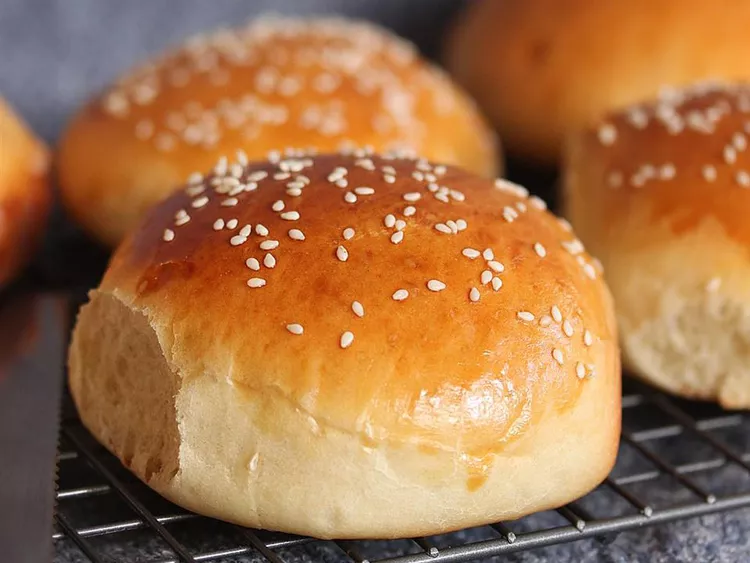

Cheese Burger

Awesome Cheese Burger
My mom used to make these hamburger buns all the time. They are so easy to make: light and fluffy as well as beautiful to look at. I get raves whenever I make them. Try using them for sandwich rolls too--delicious!
Ingredients
- 1 cup milk
- 1 cup water
- 2 tablespoons butter
- 1 egg yolk
Steps
- Combine the milk, 1 cup of water, butter, sugar and salt in a saucepan. Bring to a boil then remove from the heat and let stand until lukewarm. If the mixture is too hot, it will kill the yeast.
- Bring a large pot of lightly salted water to a boil. Cook fusilli pasta in the boiling water, stirring occasionally, until tender yet firm to the bite, about 12 minutes. Drain.
- Combine pasta with tomatoes, cheese, salami, pepperoni, green pepper, olives, and pimentos in a large bowl. Pour in salad dressing; toss to coat.
- Enjoy!